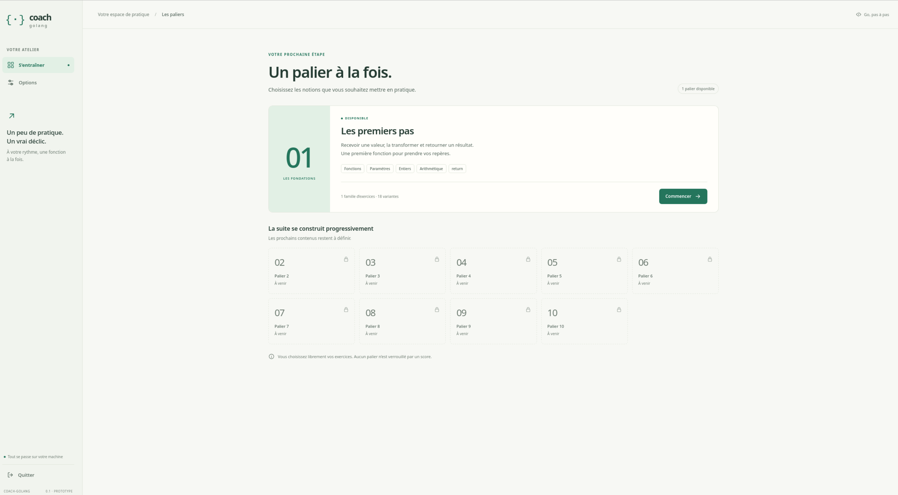
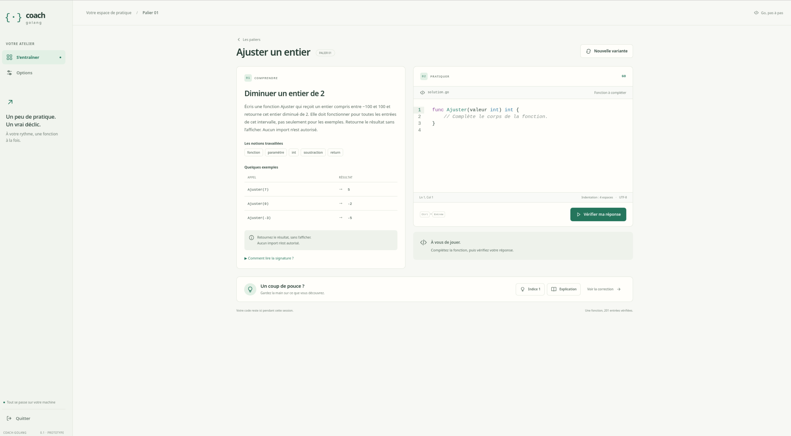

PROTOTYPE / PROJET PERSONNEL
Coach Go.
Un prototype personnel pour apprendre Go en écrivant et en testant des fonctions, à son rythme.
APERÇU DU PROTOTYPE
Les premiers écrans
Ouvrir une capture en grand dans un nouvel onglet.

L’accueil présente le principe du programme et donne accès à l’entraînement.

Le premier palier est disponible ; les autres restent à construire.
01 / INTENTION
Le contexte et l’objectif
Coach Go est un projet personnel de programme, encore au stade de prototype. L’objectif est d’entraîner l’utilisateur à écrire des fonctions en Go, des premières notions de programmation jusqu’à des mécanismes plus complexes, tout en travaillant l’algorithmique, la programmation modulaire et la méthode, à son rythme.
02 / DISPONIBLE
Stade d’avancement : prototype
- Un fonctionnement local, sans connexion à Internet, sous Linux Debian.
- Une interface graphique de prototype réalisée avec Wails.
- Un éditeur de code CodeMirror intégré, avec ses dépendances installées.
- Un premier palier disponible, avec un seul exercice : écrire la fonction Ajuster.
- Une vérification de la réponse par des tests unitaires.
03 / MON RÔLE
Développeur solo
Je développe seul ce prototype.
04 / À VENIR
Prochaines étapes
- Définir complètement le premier palier : notions abordées et niveau de difficulté.
- Créer d’autres exercices pour le premier palier.
- Réajuster la charte graphique vers un style inspiré de Go.
05 / RÉSULTAT
Un premier exercice utilisable
Le prototype permet de lire l’énoncé de l’exercice Ajuster, de coder la fonction dans l’éditeur CodeMirror et de lancer la vérification par des tests unitaires. Tout fonctionne localement sous Linux Debian. À ce stade, un seul exercice est disponible, dans le premier palier.
La capture s’ouvre en grand dans un nouvel onglet.

L’exercice « Ajuster un entier » réunit l’énoncé, l’éditeur de code et l’action de vérification.